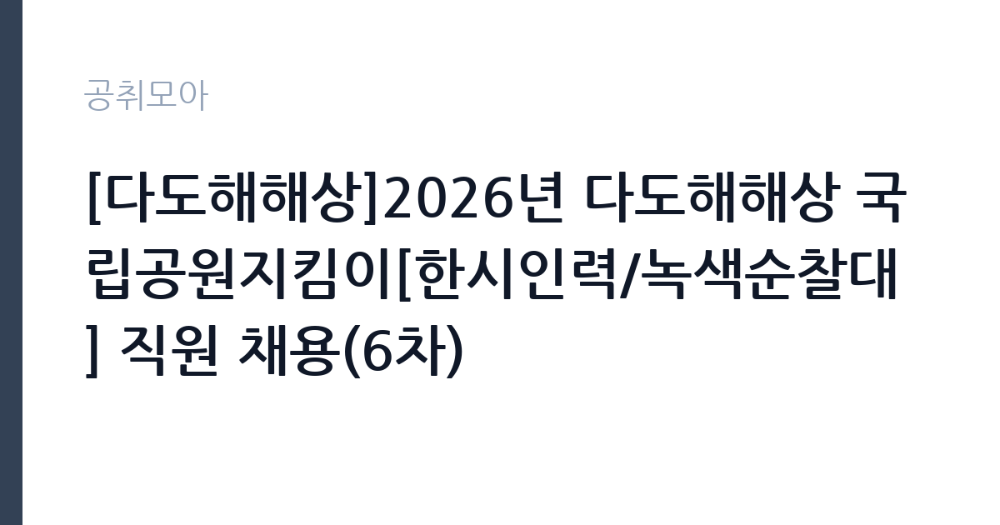

[공공기관] [다도해해상]2026년 다도해해상 국립공원지킴이[한시인력/녹색순찰대] 직원 채용(6차)
국립공원공단 · 전남광주 · 마감 2026-11-06 (D-10) · 출처 잡알리오

한눈에 보는 모집 조건
| 기관 | 국립공원공단 |
|---|---|
| 공고명 | [다도해해상]2026년 다도해해상 국립공원지킴이[한시인력/녹색순찰대] 직원 채용(6차) |
| 고용형태 | 일용직 |
| 근무지 | 전남광주 |
| 게시일 | 2026-10-27 |
| 마감일 | 2026-11-06 (D-10) |
지원자격, 이렇게 읽으세요
- 공공기관 채용공시
- 세부 조건은 원문 공고문 확인
일용·단기 근로는 정해진 사업 기간이나 단기 업무를 위해 채용되는 형태입니다. 근무 일수와 일당이 정해지고 사업 종료 시 근로관계가 끝납니다. 계절 사업이나 행사 지원, 단기 대체 인력으로 활용되는 경우가 대표적입니다. 이번 공고는 국립공원공단가 직접 진행하는 자체 전형입니다. 국립공원 한시인력은 계약 기간이 정해진 기간제 신분이며, 근무 기간은 대체로 봄·가을 성수기나 특정 사업 기간에 맞춰집니다. 자격 요건은 공고마다 다르지만 학력 제한을 두지 않고 신체 건강과 현장 근무 가능 여부를 보는 경우가 많습니다. 산악 지형을 걸을 수 있는 체력이 실질적인 자격입니다. 운전면허와 산림·환경 관련 자격은 우대 사항으로 붙는 경우가 있습니다. 근무지가 사무소 관할 구역 내 탐방로이므로 거주지와 통근 가능성을 확인해야 합니다. 동점자 처리 기준이 공고문에 있으니 배점 항목을 미리 확인해 두십시오. 공고문의 응시자격 표를 보면 자격 항목이 여러 줄로 나뉘어 있으므로, 각 줄을 하나씩 체크하며 본인 해당 여부를 표시해 두면 누락을 줄일 수 있습니다. 학력이나 전공 요건이 없는 공고라도 제출서류 목록은 그대로 적용되므로 서류 준비 부담은 줄지 않습니다. 이 공고 원문에 적힌 응시 조건 문구는 '학력,전공, 나이 제한 없음(만18세이상)' / '소득,자산 기준 초과자*는 참여 제한' / '직접일자리사업 반복** 및 중복*** 참여자는 참여 제한'입니다. 문구를 그대로 읽고 본인 해당 여부를 하나씩 표시해 두면 서류 단계에서 탈락하는 일을 줄일 수 있습니다.
이 공고의 포인트
이 건은 국립공원공단가 같은 시기에 낸 9개 모집분야 가운데 국립공원 현장 관리 직무입니다. 다른 직무 공고와 요건이 다르므로 지원 전에 모집분야 표를 대조해야 합니다. 이 공고의 첫 번째 포인트는 고용 형태입니다. 사업 기간에 맞춰 채용되므로 근무 일수와 보수가 비교적 명확합니다. 대신 다음 근무지를 별도로 구해야 합니다. 두 번째는 업무 범위가 명확하다는 점입니다. 국립공원 현장 관리 직무로 채용되므로 배치 이후 담당 업무가 크게 흔들리지 않습니다. 세 번째는 근무지입니다. 전남광주 지역 근무로 수도권 공고에 비해 지원자 분포가 넓지 않아 상대적으로 경쟁이 분산되는 경우가 있습니다. 같은 기관의 다른 공고와 접수 기간이 겹치므로 중복 지원 가능 여부를 확인해야 합니다. 같은 직무로 함께 올라온 공고 9건 가운데 마감이 중간에 위치하므로 다른 공고와 일정이 겹치는지 확인하십시오. 선발 인원은 공고문에 명시되어 있으니 모집분야 항목을 함께 확인하십시오.
전형은 어떻게 진행되나
1차 서류, 2차 면접의 2단계로 진행되는 구성이 일반적입니다. 서류에서는 자격 요건과 경력 증빙을 확인하고, 면접에서는 실제 업무 수행 능력과 조직 적응을 봅니다. 직무에 따라 필기시험이나 실기, 컴퓨터 활용 시험이 추가되기도 하므로 공고문의 전형표를 먼저 확인하십시오. 단계별로 합격자만 다음 전형에 응시할 수 있고, 단계마다 응시 자격 확인 서류를 다시 제출해야 하는 경우가 있습니다. 최종합격자 발표 후에는 신원조회와 채용 신체검사가 남아 있습니다. 온라인 접수는 마감 시각이 분 단위로 정해지므로 시스템 시간을 기준으로 판단해야 합니다.
원문에서 확인한 전형 방식
○ 학력,전공, 나이 제한 없음(만18세이상) ○ 공단 인사규정 제18조(결격사유)에 해당되지 않는 자 ○ 소득,자산 기준 초과자*는 참여 제한 ○ 직접일자리사업 반복** 및 중복*** 참여자는 참여 제한 *,**,***세부내용은 아래 ‘8.기타사항’의 ‘⑥～⑨’항 참조
이런 분께 추천해요
- 산악 지형에서 장시간 활동이 가능한 분
- 탐방객 응대와 계도 업무에 거부감이 없는 분
- 주말·성수기 근무 일정을 수용할 수 있는 분
지원 전 체크리스트
- 응시자격 요건과 경력 기준을 충족하는가 — 경력은 증명서로 입증해야 합니다
- 근무 기간과 일당·월급 지급 방식을 확인했는가
- 제출서류 목록을 모두 준비했는가 — 누락 시 서류 단계에서 탈락합니다
- 접수 마감 2026-11-06 이전에 접수 방식을 확인해 제출했는가
모집 일정과 제출 타이밍
2026-10-27에 공고가 올라왔고 접수는 2026-11-06까지입니다. 남은 기간은 10일이며, 이 기간에 자격증 사본과 경력증명서, 주민등록등본 같은 기본 서류를 모두 준비해야 합니다. 경력증명서는 발급에 며칠이 걸리는 경우가 있으니 가장 먼저 신청하십시오. 접수는 온라인과 우편·방문으로 나뉘는 경우가 많고, 우편 접수는 도착 기준으로 판정되므로 마감일 소인만 믿으면 안 됩니다. 면접 일정은 서류 발표 후 개별 통보되므로 제출 후에도 연락을 받을 수 있도록 유지해야 합니다. 마감 이후에는 어떤 사유로도 접수가 인정되지 않으므로 하루 전 제출을 목표로 하십시오.
직무 이해하기: 공공기관
국립공원공단은 전국 국립공원을 관리하는 공공기관입니다. 각 사무소는 탐방로와 야영장, 안내 시설을 운영하고 자연 자원 보전과 이용객 안전을 담당합니다. 성수기와 단풍철에는 탐방객이 크게 늘어 현장 인력을 추가로 채용합니다. 국립공원 현장 업무는 탐방로와 시설을 순찰하고, 이용객의 안전과 공원 질서를 유지하는 일입니다. 탐방로 훼손 구간을 점검하고 보수 작업을 지원하며, 불법 취사·야영·채취 같은 행위를 계도합니다. 조난이나 부상 상황에서는 위치를 파악해 구조 요청을 연결하고 1차 응급조치를 합니다. 성수기와 단풍철에는 안내와 통제 업무가 늘어나고 주말 근무가 포함됩니다. 야생생물 보호와 쓰레기 수거, 시설물 안전 점검도 일상 업무입니다. 동일 직무라도 배치된 본부나 사업소에 따라 교대 방식과 업무량이 달라질 수 있습니다. 직무 교육은 입사 후 기관 자체 계획에 따라 진행되므로 사전 경험이 없어도 시작할 수 있습니다.
자기소개서 작성 팁
국립공원 지원서는 자연 자원을 대하는 태도와 현장 근무 경험을 연결하면 설득력이 생깁니다. 등산·트레킹 경험을 단순 취미로 쓰지 말고, 탐방로 관리 상태나 이용객 행동을 관찰한 내용으로 구체화하십시오. 안내·교육·봉사 경험은 응대 역량의 근거가 됩니다. 한시인력이라는 짧은 계약 기간을 어떻게 의미 있게 채울지에 대한 계획을 한 문단 넣으면 좋습니다. 직무 경험이 많지 않다면 경험의 양보다 과정을 구체적으로 쓰는 편이 낫습니다. 어떤 상황에서 무엇을 판단했고 어떤 결과가 나왔는지 순서대로 서술하면 신뢰가 생깁니다. 지원 동기와 기여 방안은 한 문단씩 짧게 유지하고, 가장 자신 있는 경험에 분량을 몰아주십시오. 마지막 문장은 포부보다 구체적인 실행 계획으로 끝내는 것이 좋습니다.
면접 준비 포인트
면접은 현장 대응과 응대 태도 중심입니다. 탐방객이 금지 구역에 들어가려 할 때 어떻게 설득할지, 부상자를 발견하면 어떤 순서로 조치할지, 악천후에 순찰을 어떻게 조정할지 묻습니다. 공원 자원을 보호한다는 관점과 안전 우선 원칙을 함께 언급하십시오. 등산 경험과 체력 관리 방법도 자주 나오는 질문입니다. 면접은 공고문에 적힌 직무 내용을 얼마나 이해하고 있는지 확인하는 질문으로 시작하는 경우가 많으니, 모집분야 문구를 그대로 읽어 두는 것이 도움이 됩니다. 본인 경험을 말할 때는 기간, 역할, 결과를 순서대로 정리해 두면 질문이 바뀌어도 활용할 수 있습니다.
급여·근무조건 읽는 법
알리오(공공기관 경영정보 공개시스템) 2025년 결산 경영공시 기준으로 국립공원공단 일반정규직 1인당 평균보수액은 6,218만원, 공시된 신입사원 초임은 3,781만원입니다. 무기계약직 1인당 평균보수액은 3,620만원으로 공시되어 정규직과 차이가 납니다. 평균보수액은 기본급에 고정수당·실적수당·성과상여금·급여성 복리후생비를 모두 합산한 값이라 월 기본급만 보고 판단하면 실제와 크게 어긋납니다. 이번 공고는 단기·일용 채용이라 위 정규직 평균보수는 적용되지 않습니다. 근무 일수와 일당 기준으로 산정되므로 공고문 처우 항목을 확인해야 합니다. 국립공원 한시인력의 보수는 국립공원공단의 기간제 근로자 보수 기준을 따르며, 월급 형태와 일급 형태가 모두 있습니다. 계약 기간이 정해진 기간제이므로 월급여와 함께 계약 시작일과 종료일을 반드시 확인해야 합니다.구체적인 금액은 공고문의 처우 항목에 표로 제시되니 원문에서 확인하십시오. 성수기 초과근무와 휴일 근무 수당이 붙으면 실수령액이 달라집니다. 2026년 적용 최저임금은 시급 10,320원, 월 환산 2,156,880원(주 40시간·209시간 기준)입니다. 고용노동부 고시 제2025-47호로 확정된 금액입니다. 공고문에 금액이 제시되지 않은 항목은 원문 보수표나 처우 설명에서 확인해야 하며 확인되지 않은 수치는 쓰지 않는 것이 원칙입니다. 비교할 때는 월 급여뿐 아니라 상여·명절휴가비·복지포인트·초과근무수당까지 포함한 연간 총액으로 계산하십시오. 기간제라면 계약 기간 동안의 총액을, 무기계약이라면 호봉 상승과 정년까지의 누적 소득을 기준으로 판단하는 편이 정확합니다.
자주 묻는 질문
- 선발 인원은 몇 명인가요?
공고문의 모집분야 항목에 직종별 인원이 표로 제시되어 있습니다. 첨부된 공고문 원문에서 확인하십시오. - 근무지는 어디인가요?
전남광주 지역의 국립공원공단 소속 근무지입니다. 세부 주소와 출퇴근 조건은 원문 공고문에서 확인할 수 있습니다. - 보수는 얼마인가요?
채용 신분(일용·단기)과 기관 임금 규정에 따라 정해지며 구체적인 금액은 공고문 처우 항목에 제시됩니다. 금액이 공개되지 않은 경우에는 원문의 보수표를 확인하십시오.
함께 보면 좋은 공고
[공공기관] 2026년도 제3회 신입직원 공개채용 — 마감 2026-11-18[공공기관] 2026년 독립기념관 하반기 직원 채용공고 — 마감 2026-11-12[공공기관] 한국폴리텍대학 전남캠퍼스 행정지원직(휴직대체) 채용 공고 — 마감 2026-11-04출처: 잡알리오 공개정보를 바탕으로 공취모아가 정리한 안내글입니다. 모집 조건·일정은 변경될 수 있으니 지원 전 반드시 원문 공고문을 확인하세요. 본 글은 정보 제공용이며 합격을 보장하지 않습니다.